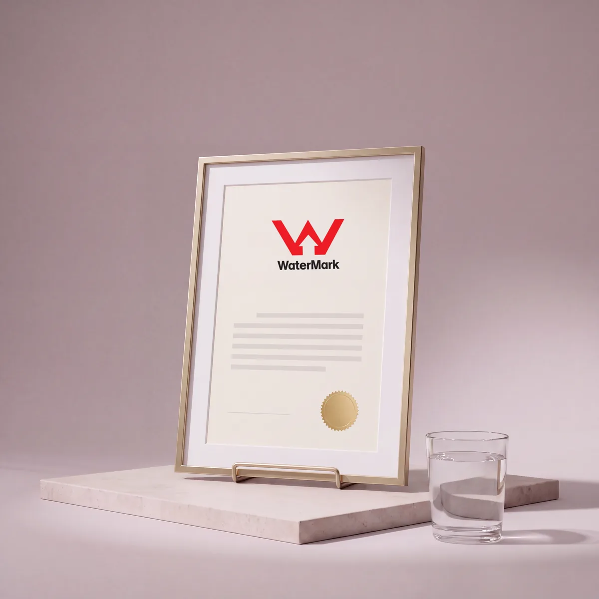
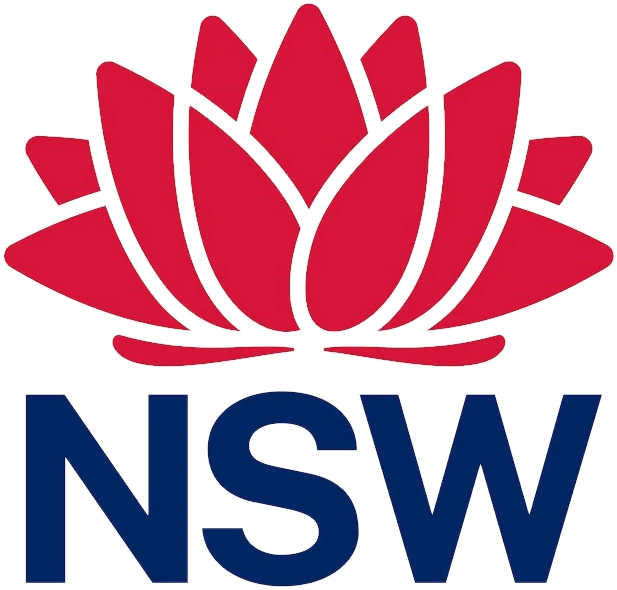
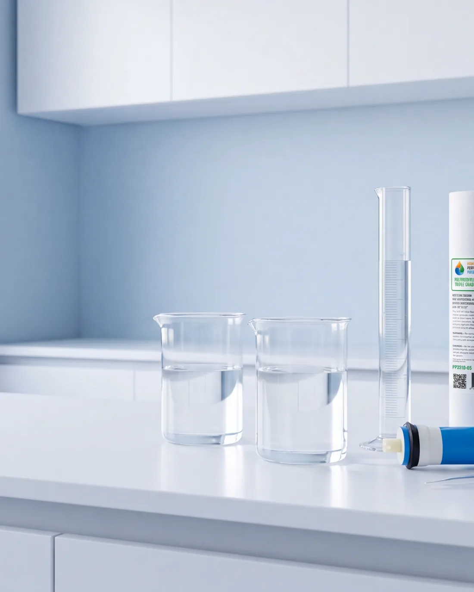
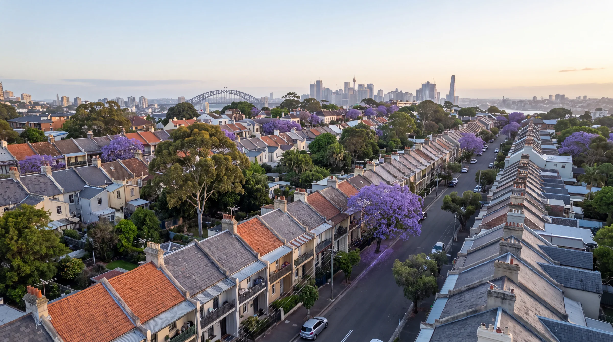
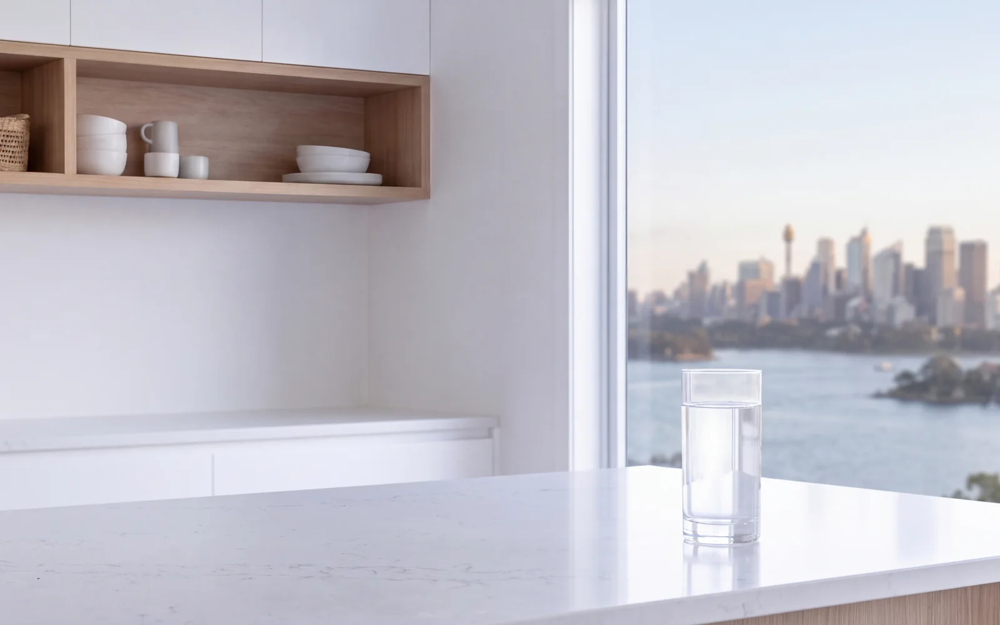

WaterMark certificate
23247
Pure Flow, Three in One Inline Filtration
- Status
- Active
- Standard
- AS 3497:2021
- Expires
- Certified by
- Pro-Switch Pty Ltd

Tested to the Australian standard, listed on the government register, fitted by a licensed plumber. Every certificate opens from this page.
 Every system we install, on the register.WaterMark is Australia’s mandatory plumbing certification.
Every system we install, on the register.WaterMark is Australia’s mandatory plumbing certification.Choose your system. Its WaterMark certificate answers, with the open link to the government register.
WaterMark certificate
23247
Pure Flow, Three in One Inline Filtration
WaterMark certificate
23247
Pure Essential, 4 Stage Neutralising Reverse Osmosis
WaterMark certificate
23247
Pure Premium, 7 Stage Hydrogen Rich Alkaline Reverse Osmosis
WaterMark certificate
22780
Pure Luxe, Smart 5 Stage Alkaline Reverse Osmosis
WaterMark certificate
080113
Pure Home, 3 Stage Whole House Filtration
WaterMark certificate
080113
Pure Home Reserve, Deluxe Whole House Filtration System
The paperwork behind the certificates, the laboratory report and the licence.
The filter media inside Pure Essential and Pure Premium is manufactured in compliance with NSF/ANSI 42, 53 and 58. NSF is an international standard for the media, never an Australian requirement. WaterMark is the Australian one.

Australia's mandatory certification for plumbing products, run by the Australian Building Codes Board. A plumbing approval, not a health claim.
AS 3497:2021 or the WaterMark technical specification, by an accredited body. Never by the people who sell it.
A certificate number, every model it covers and an expiry date, public for anyone to check. Yours is in the finder above.
Anything connected to drinking water in NSW has to be, so the two always go together.

Held on the NSW Government's Verify NSW register, the same place Fair Trading sends consumers.
Jean-Paul Barbar holds the licence, and it is on the government register for anyone to check.
Book a free inspectionCheck the licence on Verify NSW
The licence number is on every page of this site, every quote and every invoice. That is the law in NSW, and it is how you know who is at your door.

Independent laboratory report B767408, run on the laboratory's own supply. A demonstration of what the membrane does, not a test of Sydney water. Read the report.

Thirteen districts, licensed plumbers, the same certified systems in every one.
5.033 Google reviews
“Such a great team. JP and Kayla are fantastic. Would highly recommend.”
“The installation was quick and effective giving us clean fresh water immediately!”
“Absolutely fantastic experience!”
“Jean Paul delivered outstanding customer service throughout the process.”
“Exceptional quality of work and product.”
“Great service and great prices. Highly recommend!”
“Absolutely brilliant service. Everything was handled quickly and efficiently. Would highly recommend.”
“From start to finish the interaction, communication and experience was positive, fast and comprehensive.”
“Went above and beyond to ensure we were happy with the service. Highly recommend Jean Paul & Kayla.”
“I couldn’t have been happier, I definitely chose the best!”
“Very accommodating in terms of scheduling & options of systems available.”
“Great to deal with, quality work. Highly recommend.”

Tell us the suburb and what you're thinking about. A person comes back the same day, in writing, and nothing changes on the day.
 Your system
Your systemYour details are with us. A person will come back to you with a fixed price in writing. Message before 4pm on a weekday and it’s the same day.
Rather talk it through? Call 0430 546 749, or book a free inspection.
The same answers we give on the phone, written down. If yours is not here, call and ask.
WaterMark is Australia's mandatory certification for plumbing products, run by the Australian Building Codes Board. Anything connected to a building's drinking water supply has to carry it, and it has to be installed by a licensed plumber. A WaterMark certified water filter has been tested by an accredited body to AS 3497:2021 and is listed on the Australian Building Codes Board register. Every reverse osmosis, under sink and whole house system Filters For You installs in Sydney is on that register, under certificate 23247, 22780 or 080113.
Yes. Every reverse osmosis, under sink and whole house system we install is on the government register. Pure Flow, Pure Essential and Pure Premium are on certificate 23247, active, valid to 3 October 2028. Pure Luxe, our smart reverse osmosis system, is on certificate 22780, active, valid to 14 November 2028. Pure Home and Pure Home Reserve, our whole house filtration systems, are on certificate 080113, every model active, valid to 3 October 2030. Choose your system in the finder on this page and its certificate opens on the government register.
The three certificates are not interchangeable. 23247 is the AS 3497:2021 certificate for Pure Flow, Pure Essential and Pure Premium, the standard for drinking water treatment systems, design and performance, installed in accordance with the Plumbing Code of Australia. It was issued by Pro-Switch Pty Ltd, a JAS-ANZ accredited conformity assessment body, first in December 2016. Its schedule lists the sediment and carbon block cartridges, the granular carbon, the 50 GPD reverse osmosis membrane, the alkaline and hydrogen rich alkaline cartridges, the housings and manifolds they sit in, and the quick change inline filter in Pure Flow. 22780 is the certificate for Pure Luxe, our smart reverse osmosis system with its live purity display, issued by IAPMO Oceania under WMTS-103:2016, the WaterMark technical specification for water treatment systems, first certified in November 2018. 080113 is the AS 3497:2021 certificate for Pure Home and Pure Home Reserve, our whole house systems, issued by CMI Certification Pty Ltd, first in October 2025. Ask, and we point you at the exact line on the register for the system in your kitchen.
No, they answer different questions, and a good system answers both. WaterMark is the Australian plumbing approval: the product is safe to connect to drinking water and may legally be installed. NSF/ANSI standards are international performance standards for filter media: 42 for chlorine, taste and odour, 53 for health related contaminants such as lead and cysts, and 58 for reverse osmosis systems and their membranes. The carbon blocks, sediment cartridges and membranes in Pure Essential and Pure Premium are manufactured in compliance with NSF/ANSI 42, 53 and 58. That is the manufacturer's statement about how the media is built, and we describe it exactly that way. NSF is not an Australian legal requirement and never replaces WaterMark.
WaterMark certifies the product: its materials, its design and that it will not contaminate the drinking water supply. The mark on the housing means the product is fit to connect to the mains. It is a plumbing approval, not a health claim, and we never present it as one. What the system does to the water is shown separately. The independent laboratory report on this page measures tap water beside reverse osmosis water across more than 40 parameters, and the hydrogen alkaline cartridge specification is the supplier's own data across the life of the cartridge, labelled that way.
Open the Australian Building Codes Board WaterMark product search at watermark.abcb.gov.au and enter the certificate number. The certificates behind our systems are 23247, 22780 and 080113, and the links on this page open those exact entries. The register shows the certifier, the standard, every model listed and the expiry date. If a product is not on that register, it is not WaterMark certified, whatever the box says. Comparing a system from anywhere else? Ask for its certificate number and look it up the same way.
A licensed plumber has to. In NSW the Home Building Act requires the licence number on all advertising, on every contract and on every quote, and it can be checked on the NSW Government's Verify NSW register. Filters For You installations are carried out by licensed plumbers across Greater Sydney from Croydon Park. Our founder, Jean-Paul Barbar, holds NSW plumbing licence 461511C, current to March 2027.
Laboratory report B767408 compares a tap water sample with the same water after reverse osmosis and after the alkaline stages, across more than 40 parameters: fluoride, dissolved solids, chlorine, hardness and a metals panel of lead, arsenic, cadmium, chromium, copper, nickel and antimony, each measured before and after. Fluoride measured 0.74 mg/L in the tap water and under 0.05 mg/L after reverse osmosis. It was run on the laboratory's own supply as a demonstration of what the membrane does, so it is not a test of Sydney water, and it is published so you can read it in full. The numbers we quote are the numbers you can read.
A WaterMark certified system, fitted by a licensed plumber, with the paperwork you have just read. Installed in about two hours, serviced every year after, and covered for life while you stay on the Filtered for Life plan.
Rather talk it through? Call 0430 546 749.
Your systemYour details are with us. A person will come back to you with a fixed price in writing. Message before 4pm on a weekday and it’s the same day.